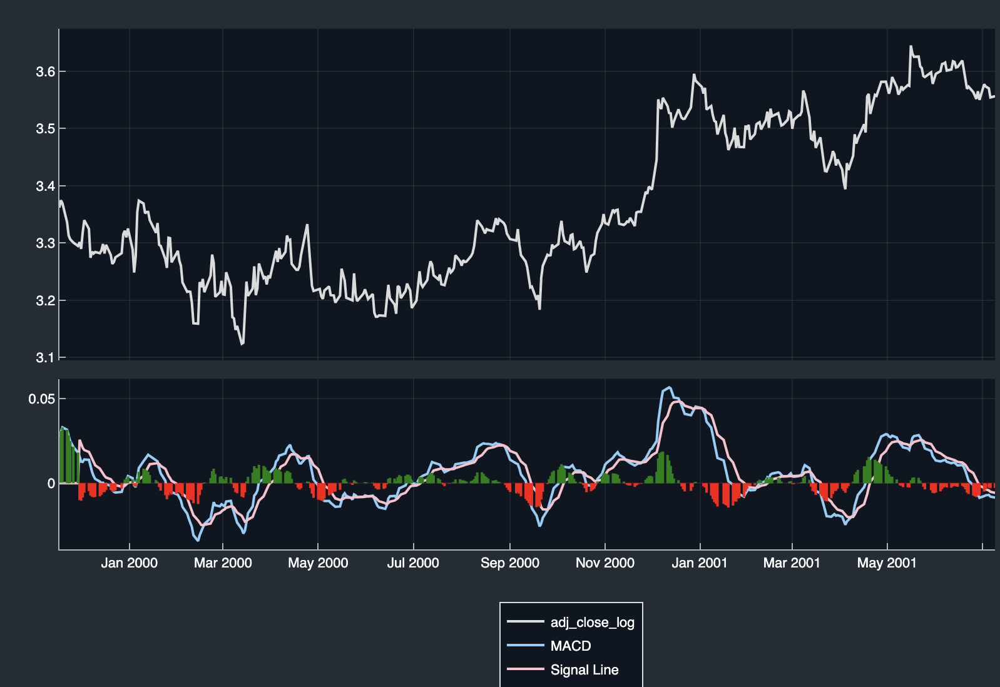
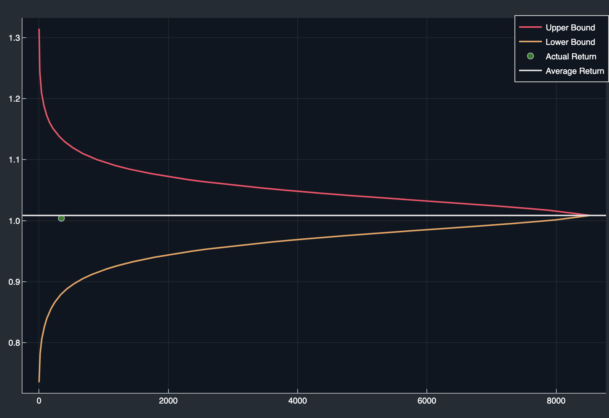
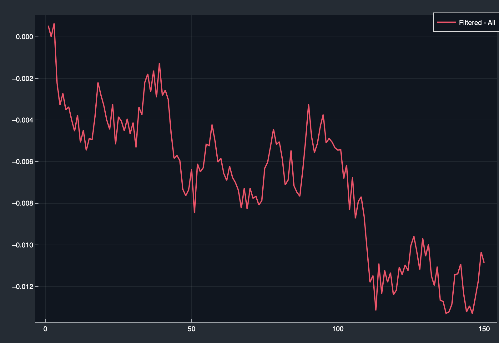

Tutorial - Basic Analysis of Time Series Data
The primary tool used to access and analyse time series is the Collection. It contains a list of Assets, where every Asset represents the time series of a single asset. An Asset typically contains several views into the time series, where each view is a continuous subset of the whole time series. Each such view is called a sample.
Collection Setup
Below follows a simple example of how to setup a Collection.
TFire> tickers = ["MMM", "AOS"]
2-element Vector{String}:
"MMM"
"AOS"
TFire> eval_dates = dates_range(Date(2001,6,2), Date(2018,6,8))
6216-element Vector{Date}:
2001-06-02...
TFire> constituents = constituents_continuous(tickers, eval_dates, 600);
TFire> spec = SpecificationCollection(constituents);
TFire> sfdb = setup_simple_fast_db(spec; read_disk=true, read_external=false, data_path = "Days/spx500_1d.jld2");
TFire> collection = setup_collection(spec, sfdb)
Setting up collection
||Collection|| (Continuous)
Tickers: 2, MMM AOS
Samples: 8562First the ticker symbols for the assets to be included are defined. Secondly the "evaluation dates" are specified as all dates between 6/2/2001 and 6/8/2018. An evaluation date is the last date in the series of dates "seen" by one sample. When a sample is later analyzed, no data beyond this date is visible to the analysis, preventing accidental "look ahead".
The Constituents is just a summary of which tickers at what dates to be included. Here the 1800 is the number of days prior to the respective evaluation date sample has access to. A full Specification is then created from the Constituents. The Specification includes both the Constituents and the DataFields, specifying which types of data to be visible to the Collection. The DataFields are here implicitly set as defaults.
A SimpleFastDB database is set up with data from a file on disk. This is where all time series data lives.
Finally a Collection is then set up. The contents of the Collection is specified by the Specification and then theactual data is provided by a link to the SimpleFastDB.
Adding Layers
The Collection provides an interface to attach Layers to a time series. A layer is a condensate of data associated with the time series. Layers may also be, as the name suggests, layered. For example, the first layer could be a pair of Exponential Moving Averages (EMAs) of the price of an asset and the second layer could then be the Moving Average Convergence Divergence (MACD) based on that pair of EMAs.
Example of adding layers:
TFire> settings = Settings()
TFire> settings[LayerEMA] = Parameters(LayerEMA, :win_sizes => [12,26]);
TFire> collection_ema = add_layer(collection, LayerEMA, settings=settings)
||Collection|| (Continuous) -> LayerEMA
Tickers: 2, MMM AOS
Samples: 8514
TFire> collection_macd = add_layer(collection_ema, LayerMACD)
||Collection|| (Continuous) -> LayerEMA -> LayerMACD
Tickers: 2, MMM AOS
Samples: 8514Here the concept of Collection Settings is introduced. This is where parameters for Layers live. They may also contain other types of parameters, which we will soon see. It should be noted that settings was not needed when adding the MACD layer since it was already attached to collection_ema at its creation.
Let's have a look at all the settings that has been used
TFire> collection_macd.settings_used
LayerMACD
:signal_period => 9
:long_period => "maximum"
:short_period => "minimum"
---
TSDLink
:resolution => "1d"
:default_price_field => :adj_close_log
---
LayerEMA
:win_sizes => [12, 26]
---We can see that LayerMACD has settings even though no parameters were specified. This is because all Layers come with default parameters that are used if some parameter is omitted. The parameters for TSDLink specifies the resolution of the time series related to the Collection and which data field that is to be used when a layer requests the "price" of an asset. Here, the adjusted logarithmic closing price will then be used if nothing else is specified for a particular layer.
Plotting the Graph for a Sample
Let's look at the default graph for the first sample of the Asset with ticker MMM.
TFire> plot_graph(collection_macd, "MMM", 1) Notice how the graph ends at 2 jun 2001 coinciding with the evaluation date of the first sample. No data beyond this date is visible to this particular sample.
Analysis
Let's say we have a theory that any time the MACD histogram changes sign from negative to positive this signals a possible short term trend change. We can filter out all samples where the evaluation date has a positive value in the MACD histogram and the previous date is negative.
First we set up a function that returns true if a vector has a positive last value and a negative second to last value.
TFire> function macd_signal(macd_hist)
return macd_hist[end-1] < 0 && macd_hist[end] > 0
endSecondly, we need to define a DataView. For now, all we need to know is that a Data View provides a view of some data in a Collection. Here a view of the MACD histogram from the MACD Layer. For a more comprehensive explanation of Data Views see DataViews.
TFire> dv_macd = DVLayerField(collection_macd, :macd_histogram, LayerMACD);Now let's make a copy of the Collection.
TFire> collection_macd_copy = copy_collection(collection_macd)Now we can filter the Collection with the Data View and the predefined function. If the function returns true we want to keep the sample (thus action=:keep), otherwise throw it away.
TFire> filter_collection!(collection_macd_copy, dv_macd, macd_signal; action=:keep)Let's have a look at how many dates that were kept after the filtering.
TFire> collection_macd_copy
||Collection|| (Continuous) -> LayerEMA -> LayerMACD
Tickers: 2, MMM AOS
Samples: 346And how they are split between the two assets.
TFire> collection_macd_copy["MMM"]
||Collection|| (Continuous) -> LayerEMA -> LayerMACD
Ticker: MMM
Samples: 171
TFire> collection_macd_copy["AOS"]
||Collection|| (Continuous) -> LayerEMA -> LayerMACD
Ticker: AOS
Samples: 175We can calculate the average returns for the resulting filtered collection collection_macd_copy and then we can plot an envelop of all possible best and worst returns of some subset with x number of samples of the whole of collection_macd.
TFire> plot_envelope(collection_macd_copy, collection_macd; steps=10)
The horizontal line marks the average return of collection_macd, and we can see that the filtered dates performed worse than the average date and significantly worse than the optimal choice of 353 dates/samples.
10 days might be a bad choice. Maybe some other period may prove to give a better result...
TFire> mean_return_filtered = mean_compound_return_total(collection_macd_copy, 150);
TFire> mean_return_original = mean_compound_return_total(collection_macd, 150);
TFire> diff_return = mean_return_filtered .- mean_return_original;
TFire> plot(diff_return, label="Filtered - All", legend=:topright)
Here, we calculated the difference between the average return of the filtered Collection and the average return of the original Collection for each possible step length. I.e element x in diff_return corresponds to the difference in average return after x steps.
We then plot this difference. From the plot we can see that the case for selecting dates to take a long position gets slightly better if we are looking to stay in the trade for a longer period but it never gets very convincing.
In Tutorial - Advanced we look at a similar approach but with a larger amount of tickers and more advanced methods.
In Tutorial - Backtesting we instead look at how to do basic portfolio backtesting on a simple strategy.